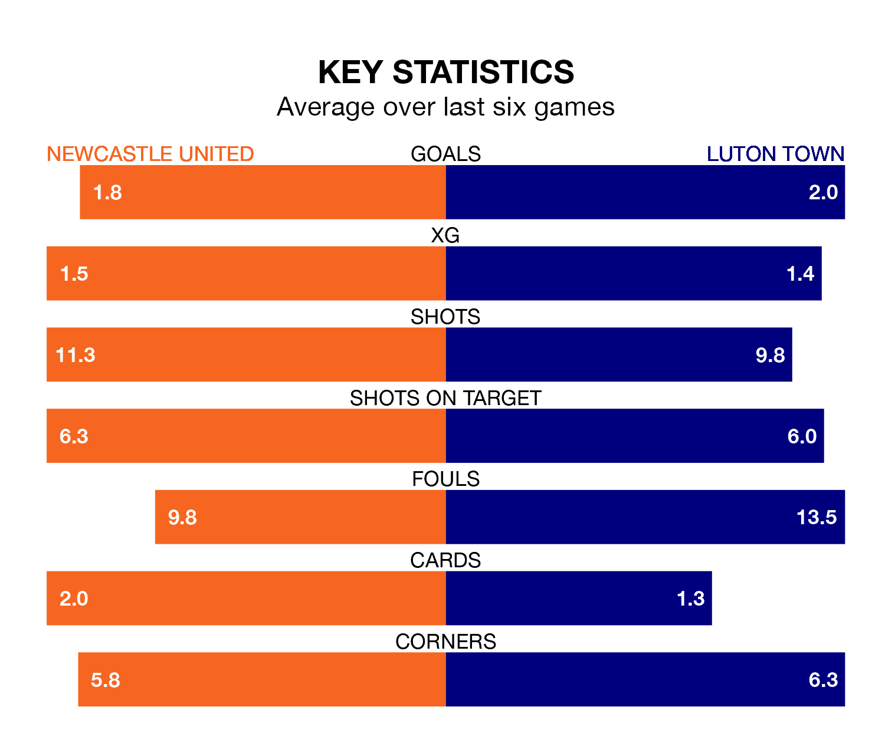

Struggling Luton Town face Newcastle United away at St. James' Park on Saturday looking to build on a win in their last league outing.
After securing all three points with a 4-0 victory over Brighton and Hove Albion on Tuesday, the Hatters sit 18th in the Premier League.
They travel to play a Newcastle side eighth in the standings, who also won their last match, 3-1 against Aston Villa.
With 44 goals in 22 games so far this season, Newcastle are scoring more than average in the league with 2.0 goals per game. And they are conceding fewer than average, letting in 33 goals at a rate of 1.5 per game.
Luton, meanwhile, are below average scorers, with 1.3 goals per game, compared to a league average of 1.6. They have conceded 1.8 goals per game.
With Nick Pope between the sticks, United can rely on one of the league's safest pair of hands. He has kept six clean sheets in his 14 appearances this season, and only two other 'keepers – Everton's Jordan Pickford and Liverpool's Alisson Becker – have been able to prevent the opposition scoring on more occasions in the Premier League.
In Town's net, Thomas Kaminski has two clean sheets in 21 games. He has conceded a goal every 54 minutes, 80% more often than the 97 minutes between goals for Pope.
The Magpies are in disappointing form in the Premier League, with two wins and four losses from their last six games.
With three wins and a draw over that period, the Hatters' form is better – they have taken 10 points from 18, compared to the home team's six.
Saturday's match will be refereed by Thomas Bramall, who has taken charge of six Premier League games so far this season, issuing one red card and booking 29 players. He has awarded two penalties.
The last Newcastle game Bramall refereed was a 2-0 home win against Burnley on September 30. He is yet to oversee a match featuring Luton this season.
Updated: 15:45 (UTC), 02/02/24